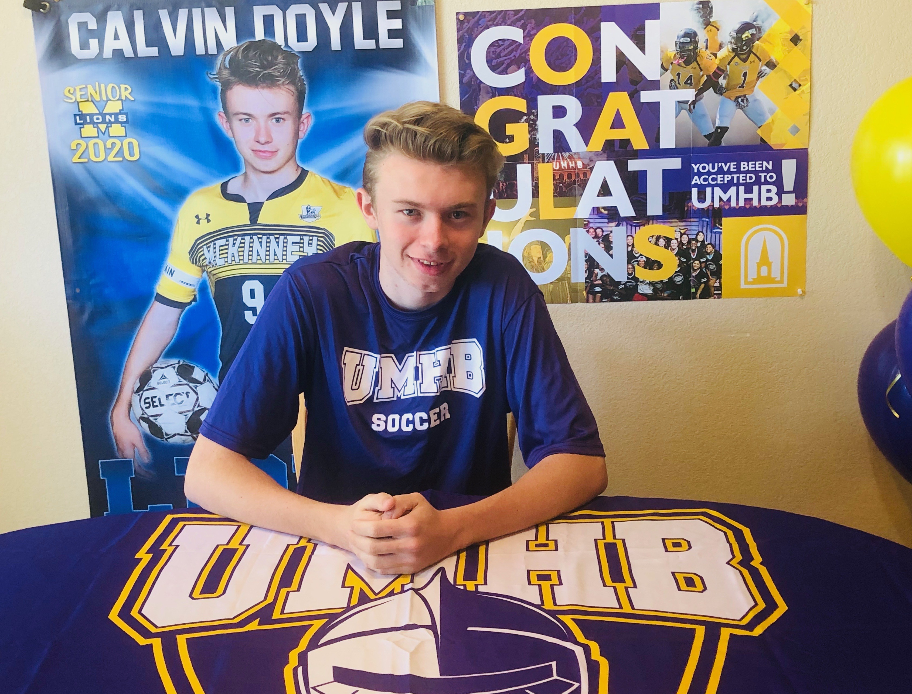
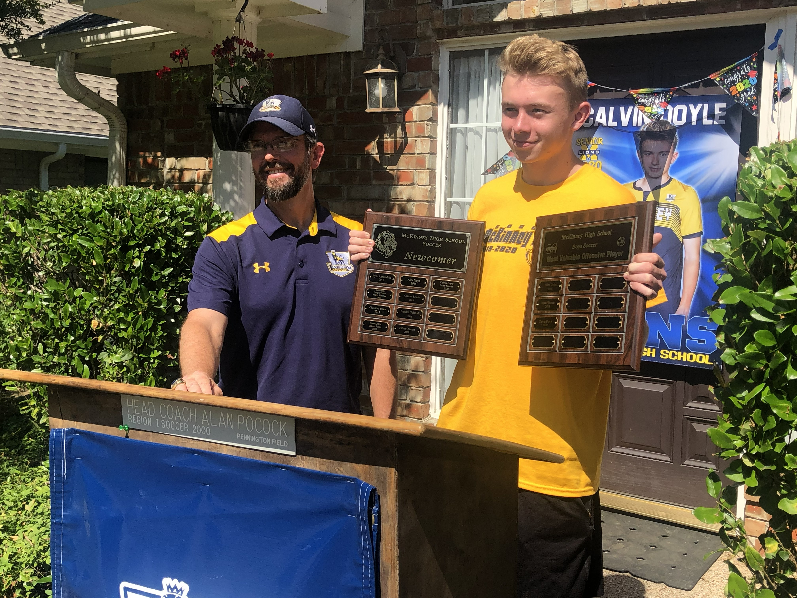

Calvin Doyle
Born in the United Kingdom, Calvin brings a deep passion for the game and a broad international perspective to youth soccer development. After relocating to Texas, he established himself as a standout player in the North Texas soccer community, competing at the highest collegiate level while also serving as both Junior Varsity and Varsity Captain during his senior year at a high school in McKinney, Texas. His leadership, commitment, and performances on the field earned him both the Best Defensive Player and Most Valuable Player honors for his team.
Committed to continued growth in the game, Calvin has pursued advanced senior-level coaching badges and has gained valuable coaching experience with Texas Spurs Soccer Club and AYSES Football Club, helping develop young athletes both technically and personally.
Calvin’s experience extends well beyond the United States. He has represented the U.S. internationally through participation in prestigious tournaments including the Gothia Cup and the Copenhagen Youth Football Tournament, gaining valuable exposure to global styles of play and competition.
Beyond soccer, Calvin is deeply committed to service and leadership. He has led humanitarian outreach initiatives connected to the 2014 FIFA World Cup and the 2018 FIFA World Cup, combining his passion for football with a heart for community impact and international engagement.
Known for his leadership, discipline, and player-first mentality, Calvin is dedicated to developing athletes of strong character while inspiring young players to pursue excellence both on and off the field.
Technical Development
Ball control, passing, finishing, dribbling, and first touch.
Tactical Training
Positioning, spacing, movement, and decision-making.
Mental Growth
Confidence, resilience, leadership, and coachability.